Linear Modeling
Get Ready!
- Download linearmodels.zip. It contains the R script we’ll use today (linearmodel.R), an R script to recreate the introductory example here (intro_model.R), and a project file.
Linear Modeling
We’ll focus on inferential models today, and gesture toward predictive models at the end.
What are models?
By a model, we mean a mathematical representation about the process that generated our observed data (aka data generation process). That is, how an outcome of interest (a response variable, dependent variable, \(Y\)) is related to (is a function of) one or more predictor (explanatory, independent, \(X\)) variables. For example, \[Y = \beta_0 + \beta_1 X_1 + \beta_2 X_2 + \epsilon\]
where \(Y\) is the outcome/response variable, \(X_1\) and \(X_2\) are the predictors/explanatory variables, \(\beta_0\) and \(\beta_1\) are coefficients to be estimated, and \(\epsilon\) is random error (more below).
What are linear models?
Linear models, or regression models, trace the the distribution of the dependent variable (\(Y\)) – or some characteristic of the distribution (the mean) – as a function of the independent variables (\(X\)s).In other words, the regression function/linear model is the curve determined by the conditional means (conditional expectation) of the response variable for fixed values of explanatory variables.
Using our Albemarle Homes data, I’ve plotted the “improvement value” of a property as a function of the square feet of the property – with square feet collapsed into bins ranging from 0-250, 250-500, 500-750, etc.
# plot with bins
p <- ggplot(homes_tmp, aes(x = bin_medx, y = improvementsvalue))
p + geom_point(alpha = 1/10) 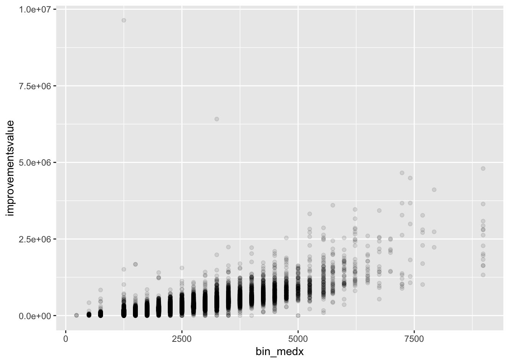
This shows the conditional distribution of improvement value. Let’s add the conditional mean for each square foot bin.
# plot with conditional means
p + geom_point(alpha = 1/10) +
geom_point(aes(x=bin_medx, y=bin_meany), color = "orange", size = 3) 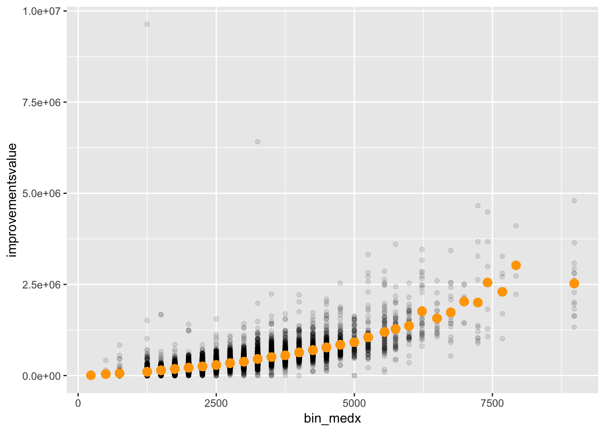
If we connect these dots, we’ve traced the curve of the conditional mean of improvement value.
# plot with line connecting conditional means
p + geom_point(alpha = 1/10) +
geom_point(aes(x=bin_medx, y=bin_meany), color = "orange", size = 3) +
geom_line(aes(x=bin_medx, y=bin_meany), color = "orange")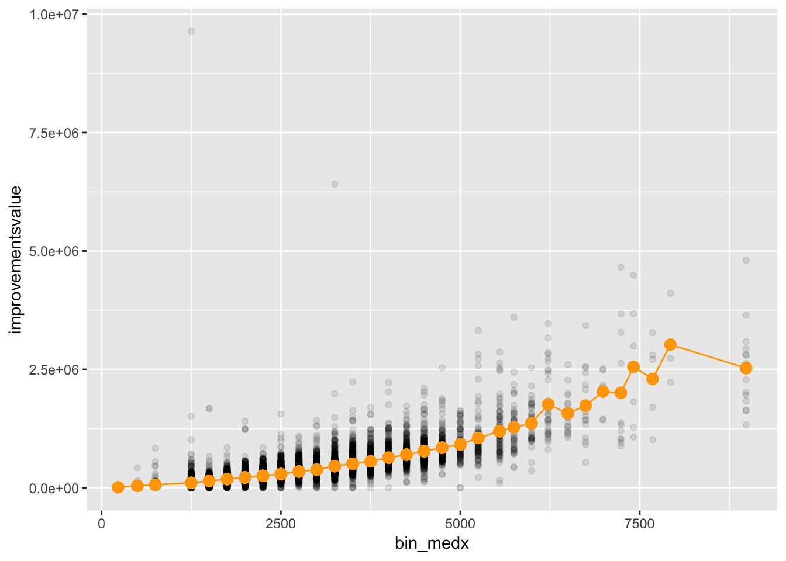
In linear regression analysis, we add the additional caveat that (the mean of) \(Y\) is some linear function of \(X\).
# plot with regression line
p + geom_point(alpha = 1/10) +
geom_smooth(method = "lm", se = FALSE, color = "blue") +
geom_point(aes(x = bin_medx, y = bin_meany), color = "orange", size = 3) +
geom_line(aes(x = bin_medx, y = bin_meany), color = "orange") 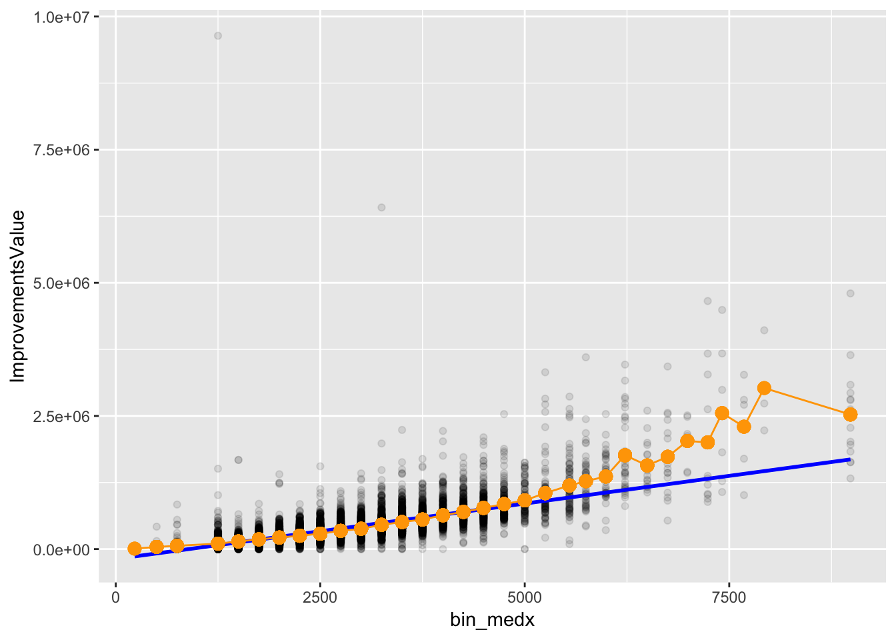
We represent the relationship mathematically \[E(Y|X_i) = \beta_0 + \beta_1 X_1 + \beta_2 X_2\]
Here, \(\beta_1\) represents the expected unit change in \(Y\) for a unit change in \(X_1\).
For example,
\[Improvement~value = -185679 + 208 * Square~feet\]
For every unit change in square feet bins – in this case, a 250 increase – we expect improvement value to increase by 208 dollars. The intercept, in this case, is essentially meaningless – why?
Linearity
Linearity doesn’t necessarily imply that the curve connecting the mean of \(Y\) conditional on values of \(X\) is a straight line (though that is often what we impose), but that the parameters that describe the function relating \(Y\) to the \(X\)s are linear. The equation is additive – the weights aren’t multipled or raised to a power other than 1.
This is not additive \[E(Y|X_i) = \beta_0 + \beta_1 X_1^{\beta_2}\]
… and so not a linear model. But this is additive \[E(Y|X_i) = \beta_0 + \beta_1 X_1 + \beta_2 X_2^2\]
… and so is a linear model, though not a straight line.
Model error
Models are probabilistic, not deterministic.
- The regression tells us about the average assessed value for homes of a given size; any given home will deviate from the conditional expectation (conditional mean), much like a home’s value will deviate from the overall mean in the sample.
- A home’s assessed value isn’t perfectly predicted by size, or even size and a lot of other important variables.
- And if the data collection process was repeated, the assessed values would vary from those we observe here.
No model will perfectly predict an outcome of interest, so regression models are laregely about quantifying our uncertainty. The error term is meant to capture this stochastic element
An aside (sort of)
All statistical models are extreme simplifications of complex social reality, not literal representations of the social processes by which outcomes are realized and observed.
Or, as George Box famously notes in his 1979 address to ASA (via UVA):
Models, of course, are never true, but fortunately it is only necessary that they be useful. For this it is usually needful only that they not be grossly wrong.
More succintly, in 1987
All models are wrong, but some are useful.
Avoid reifying statistical models; they are descriptive summaries, not literal accounts of social processes.
Residuals
\(\epsilon\) is our random (stochastic) element, the error or disturbance term. It represents the deviation of a particular value of \(Y_i\) from the conditional mean. \[\epsilon_i = Y_i - E(Y|X_i)\]
Regression partitions variation in \(Y\) into the systematic component (that accounted for by variation in \(X\)s) and the stochastic component (not explained).
Error is estimated by the residuals – the difference between the predicted value and actual value (shown here for a sample of 500 homes)
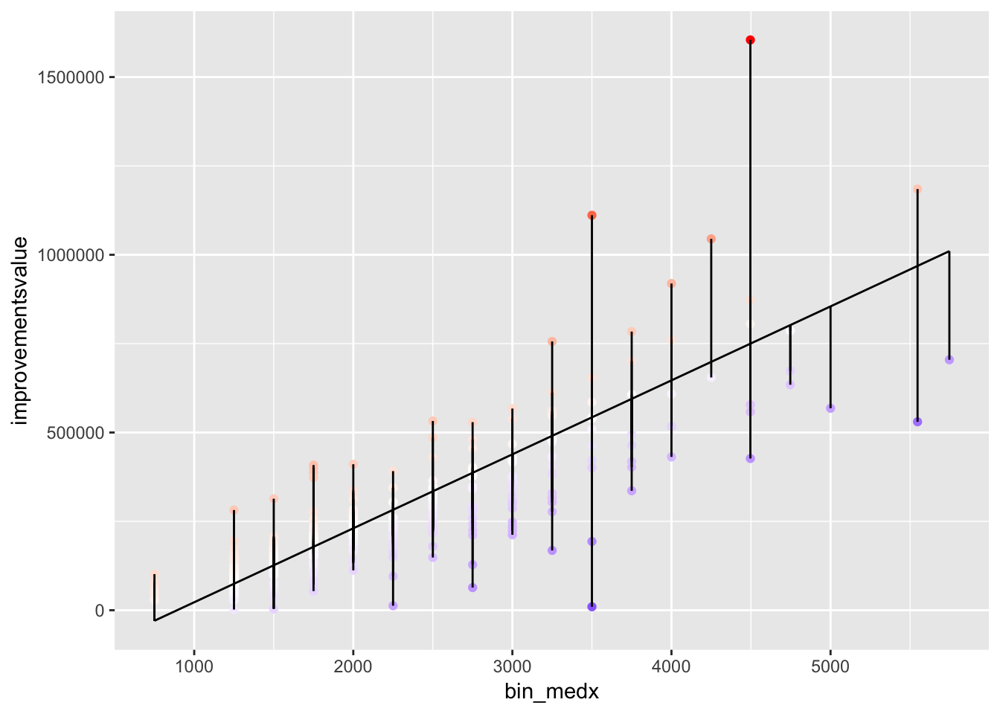
The model parameters are estimated to generate a mean residual value of 0. What we use the residuals to estimate, then, is the variance of the error, \(\sigma^2_{\epsilon}\) – that is, how much a typical observation’s actual value deviates from the expected value.
Theoretically \(\epsilon_i\) represents the aggregated omitted variables, measurement error in \(Y\), and inherently random elements of \(Y\).
Estimation (briefly)
We estimate the regression coefficients (weights, parameters) by minimizing the residual sum of squares (RSS, or the squared-error loss function). This generates estimates that define a line as close to the actual data points as possible.
\[min \sum (\hat{\epsilon}_i)^2\\ min \sum(Y_i - \hat{Y}_i)^2\\ min \sum(Y_i - \hat{\beta}_0 + \hat{\beta}_1 X_i)^2\]
This least-squares criterion is a quadratic and symmetric function:
- Quadratic: deviations farther from the line are weighted more heavily by the squaring process so atypical observations can have a big effect on the placement of the line.
- Symmetric: deviations above the least-squares line and those below it are treated the same.
Before you model
Explore and clean the data
- numbers are read as numbers; factors are read as factors
- values are in expected range
- how much missingness, how are missing obs coded
- how variables are distributed (histograms, density plots, etc.)
Explore and visualize relationships
- approximately linear? scatterplots and smoothers
- interactions? conditioning plots and facetting

Linear Models in R
Implementation in R
To fit a linear model we propose a model and then estimate the coefficients and the standard deviation of the error term. For the model \(Y = \beta_0 + \beta_1 X_1 + \beta_2 X_2 + \epsilon\), this means estimating \(\beta_0\), \(\beta_1\), \(\beta_2\), and \(\sigma\).
The basic function is lm; required arguments are formula and data.
lm(Y ~ X1 + X2, data = mydata)
lm_impvalue <- lm(improvementsvalue ~ finsqft + age + lotsize,
data = homes)Model summary
The saved linear model object contains various quantities of interest. Extractor functions provide those quantities, e.g.,
summary(lm_impvalue)##
## Call:
## lm(formula = improvementsvalue ~ finsqft + age + lotsize, data = homes)
##
## Residuals:
## Min 1Q Median 3Q Max
## -983506 -52254 -14 41003 8832959
##
## Coefficients:
## Estimate Std. Error t value Pr(>|t|)
## (Intercept) -132087.07 2174.03 -60.76 <2e-16 ***
## finsqft 199.53 0.86 232.00 <2e-16 ***
## age -374.91 29.77 -12.59 <2e-16 ***
## lotsize 1169.92 36.60 31.96 <2e-16 ***
## ---
## Signif. codes: 0 '***' 0.001 '**' 0.01 '*' 0.05 '.' 0.1 ' ' 1
##
## Residual standard error: 142600 on 32741 degrees of freedom
## (1 observation deleted due to missingness)
## Multiple R-squared: 0.6453, Adjusted R-squared: 0.6452
## F-statistic: 1.985e+04 on 3 and 32741 DF, p-value: < 2.2e-16- Call: The model formula, useful if result is saved for later
- Residuals: A quick check of the distribution of residuals. Ideally, median is near 0, max and min, and 1Q and 3Q, are approximately equivalent.
- Coefficients:
- Estimate: \(\hat{\beta}\)
- Std. error: standard error of \(\hat{\beta}\)
- t value: test statistic for \(H_0: \hat{\beta} = 0\), calculated by \(\left(\frac{estimate}{std. error}\right)\)
- \(\mathbf{Pr(>|t|)}\): \(p\)-value of hypothesis test (2-sided)
- Signif. codes: indicate statistical significance
- Residual standard error: \(\hat{\sigma}\)
- degrees of freedom: # of obs - # of estimated parameters
- Multiple R-squared: measure of model fit (0,1)
- Adjusted R-squared: measure of model fit adjusted for number of parameters (0,1)
- F-statistic: test statistic for hypothesis that all coefficients (other than intercept) simultaneously equal zero
- p-value: \(p\)-value for F-statistics
Extraction
To extract specific quantities of interest:
coef(lm_impvalue)## (Intercept) finsqft age lotsize
## -132087.0703 199.5313 -374.9117 1169.9181confint(lm_impvalue)## 2.5 % 97.5 %
## (Intercept) -136348.2491 -127825.8916
## finsqft 197.8456 201.2170
## age -433.2709 -316.5524
## lotsize 1098.1808 1241.6554head(fitted(lm_impvalue))## 1 2 3 4 5 6
## 253512.60 303359.07 131431.34 69342.13 127952.87 298186.77# or save summary information
ms_impvalue <- summary(lm_impvalue)
# and extract quantitites
ms_impvalue$coefficients## Estimate Std. Error t value Pr(>|t|)
## (Intercept) -132087.0703 2174.0303644 -60.75677 0.000000e+00
## finsqft 199.5313 0.8600424 232.00173 0.000000e+00
## age -374.9117 29.7745718 -12.59167 2.848072e-36
## lotsize 1169.9181 36.5999935 31.96498 8.371306e-221ms_impvalue$adj.r.squared## [1] 0.6452184ms_impvalue$sigma ## [1] 142615.2Specifying Models
R uses the Wilkinson-Rogers notation for specifying models:
response variable ~ explanatory variables
The tilde (~) is read as “is modelled as a function of” or “regressed on.” Additional model symbols are include:
+inclusion of variable-exclusion of variable (not subtraction)∗include variables and their interactions:interact variables∧interaction of variables to specified degree (not an exponent)
To override a model symbol, use the I() function.
Some examples
y ~ x1 + x2 + x3(multiple regression)y ~ .(regress y on all variables in data set)y ~ x1 + x2 - 1(exclude intercept)y ~ x1 + x2 + x2:x2(interact x1 and x2)y ~ x1 * x2(same as above)y ~ x1 + x2 + x3 + x1:x2 + x1:x3 + x2:x3 + x1:x2:x3(all two and three-way interactions)y ~ x1 * x2 * x3(same as above)y ~ (x1 + x2 + x3)ˆ2(all 2-way interactions)y ~ x1 + I(x1ˆ2) + x3(polynomial regression)y ~ poly(x1, 2, raw = TRUE) + x3(polynomial regresion)
Factors
For inclusion in a model, R requires categorical predictors – like city or condition in the Albemarle housing data – to be encoded as factors. A factor is a set of integer codes (1, 2, 3) with associated levels (Fair, Average, Good).
By default, coefficients for factors are modeled using treatment contrasts – one level is treated as the baseline and the other levels have coefficients that express differences from that baseline. For example, let’s add the city address of the property.
table(homes$city)##
## CHARLOTTESVILLE CROZET EARLYSVILLE KESWICK
## 21113 3018 1920 1619
## SCOTTSVILLE NORTH GARDEN ESMONT AFTON
## 1077 620 538 519
## BARBOURSVILLE OTHER
## 422 1900lm_impvalue <- lm(improvementsvalue ~ city + finsqft + age + lotsize,
data = homes)
summary(lm_impvalue)##
## Call:
## lm(formula = improvementsvalue ~ city + finsqft + age + lotsize,
## data = homes)
##
## Residuals:
## Min 1Q Median 3Q Max
## -1045070 -52926 -795 40964 8808218
##
## Coefficients:
## Estimate Std. Error t value Pr(>|t|)
## (Intercept) -1.260e+05 2.218e+03 -56.785 < 2e-16 ***
## cityCROZET -2.367e+04 2.769e+03 -8.550 < 2e-16 ***
## cityEARLYSVILLE -2.441e+04 3.404e+03 -7.171 7.58e-13 ***
## cityKESWICK -2.178e+04 3.714e+03 -5.865 4.55e-09 ***
## citySCOTTSVILLE -2.439e+04 4.477e+03 -5.448 5.13e-08 ***
## cityNORTH GARDEN -2.173e+04 5.820e+03 -3.733 0.000190 ***
## cityESMONT -3.002e+04 6.245e+03 -4.808 1.53e-06 ***
## cityAFTON -2.099e+04 6.336e+03 -3.314 0.000922 ***
## cityBARBOURSVILLE -3.510e+04 7.001e+03 -5.013 5.37e-07 ***
## cityOTHER -2.681e+04 3.446e+03 -7.781 7.41e-15 ***
## finsqft 2.000e+02 8.752e-01 228.523 < 2e-16 ***
## age -3.326e+02 3.003e+01 -11.076 < 2e-16 ***
## lotsize 1.235e+03 3.689e+01 33.468 < 2e-16 ***
## ---
## Signif. codes: 0 '***' 0.001 '**' 0.01 '*' 0.05 '.' 0.1 ' ' 1
##
## Residual standard error: 142200 on 32732 degrees of freedom
## (1 observation deleted due to missingness)
## Multiple R-squared: 0.6476, Adjusted R-squared: 0.6475
## F-statistic: 5014 on 12 and 32732 DF, p-value: < 2.2e-16The effect of the baseline category – Charlottesville – is not listed, but is part of the intercept. The coefficients on the remaining levels represent how the value of homes in the other cities differ, on average, from the value of homes in Charlottesville.
Interactions
Inclusion of a factor variable tests for varying intercepts between categories, but assumes any numerical variables influence the outcome variable for each category in the same way – e.g., the baseline value of homes in Charlottesville may be higher, but the relation between home size and home value is the same across all cities.
If, instead, the effect of a variable depends on another variable – e.g., the effect of home size on home value depends on which city the home is in – we say the variables interact. Interactions are one way of expressing potential causal heterogeneity, when an outcome is structured differently for different types of observations.
lm_impvalue <- lm(improvementsvalue ~ city*finsqft + age + lotsize,
data = homes)
summary(lm_impvalue)##
## Call:
## lm(formula = improvementsvalue ~ city * finsqft + age + lotsize,
## data = homes)
##
## Residuals:
## Min 1Q Median 3Q Max
## -1076410 -52942 -55 41156 8782602
##
## Coefficients:
## Estimate Std. Error t value Pr(>|t|)
## (Intercept) -1.395e+05 2.528e+03 -55.176 < 2e-16 ***
## cityCROZET 2.484e+04 7.041e+03 3.528 0.000419 ***
## cityEARLYSVILLE 1.632e+04 8.627e+03 1.892 0.058517 .
## cityKESWICK 7.216e+03 8.699e+03 0.830 0.406803
## citySCOTTSVILLE 5.050e+04 1.005e+04 5.023 5.10e-07 ***
## cityNORTH GARDEN -5.818e+04 1.273e+04 -4.570 4.89e-06 ***
## cityESMONT -4.164e+04 1.400e+04 -2.975 0.002936 **
## cityAFTON -3.451e+03 1.424e+04 -0.242 0.808545
## cityBARBOURSVILLE 2.586e+04 1.676e+04 1.543 0.122902
## cityOTHER 2.620e+04 7.104e+03 3.689 0.000226 ***
## finsqft 2.073e+02 1.094e+00 189.513 < 2e-16 ***
## age -3.473e+02 3.010e+01 -11.537 < 2e-16 ***
## lotsize 1.264e+03 3.740e+01 33.788 < 2e-16 ***
## cityCROZET:finsqft -2.468e+01 3.264e+00 -7.563 4.04e-14 ***
## cityEARLYSVILLE:finsqft -1.923e+01 3.570e+00 -5.386 7.24e-08 ***
## cityKESWICK:finsqft -1.315e+01 3.127e+00 -4.203 2.64e-05 ***
## citySCOTTSVILLE:finsqft -4.464e+01 5.499e+00 -8.117 4.93e-16 ***
## cityNORTH GARDEN:finsqft 1.992e+01 6.127e+00 3.251 0.001150 **
## cityESMONT:finsqft 1.003e+01 8.515e+00 1.178 0.238889
## cityAFTON:finsqft -9.260e+00 6.820e+00 -1.358 0.174552
## cityBARBOURSVILLE:finsqft -3.115e+01 7.710e+00 -4.040 5.36e-05 ***
## cityOTHER:finsqft -2.952e+01 3.504e+00 -8.424 < 2e-16 ***
## ---
## Signif. codes: 0 '***' 0.001 '**' 0.01 '*' 0.05 '.' 0.1 ' ' 1
##
## Residual standard error: 141700 on 32723 degrees of freedom
## (1 observation deleted due to missingness)
## Multiple R-squared: 0.65, Adjusted R-squared: 0.6498
## F-statistic: 2894 on 21 and 32723 DF, p-value: < 2.2e-16Here we have varying intercepts and varying slopes. We can have interactions between two factors, between a factor and numeric variable (as above), between two numeric variables, between three variables! And polynomial regression, where a predictor is included as a squared or cubed (or higher exponent) term, works the same way – with a variable interacted with itself.
Is this interaction significant?
anova(lm_impvalue)## Analysis of Variance Table
##
## Response: improvementsvalue
## Df Sum Sq Mean Sq F value Pr(>F)
## city 9 4.4915e+13 4.9906e+12 248.564 < 2.2e-16 ***
## finsqft 1 1.1476e+15 1.1476e+15 57156.561 < 2.2e-16 ***
## age 1 6.2751e+11 6.2751e+11 31.255 2.281e-08 ***
## lotsize 1 2.2634e+13 2.2634e+13 1127.321 < 2.2e-16 ***
## city:finsqft 9 4.4236e+12 4.9152e+11 24.481 < 2.2e-16 ***
## Residuals 32723 6.5700e+14 2.0078e+10
## ---
## Signif. codes: 0 '***' 0.001 '**' 0.01 '*' 0.05 '.' 0.1 ' ' 1Come back next week for more on interpreting interactions!
Nonlinearities
If data exploration suggested relationships aren’t reasonably linear, transformations of the variables can accommodate a variety of nonlinearities. Logs and polynomials are the most widely used.
Adding a squared X term:
lm_impvalue <- lm(improvementsvalue ~ city + poly(finsqft, 2, raw = TRUE) + age + lotsize,
data = homes)
summary(lm_impvalue)##
## Call:
## lm(formula = improvementsvalue ~ city + poly(finsqft, 2, raw = TRUE) +
## age + lotsize, data = homes)
##
## Residuals:
## Min 1Q Median 3Q Max
## -1382644 -38314 -6285 27454 8923965
##
## Coefficients:
## Estimate Std. Error t value Pr(>|t|)
## (Intercept) 7.936e+04 3.346e+03 23.719 < 2e-16 ***
## cityCROZET -1.536e+04 2.548e+03 -6.031 1.65e-09 ***
## cityEARLYSVILLE -1.270e+04 3.134e+03 -4.053 5.06e-05 ***
## cityKESWICK -2.422e+04 3.415e+03 -7.094 1.33e-12 ***
## citySCOTTSVILLE -3.069e+04 4.117e+03 -7.454 9.26e-14 ***
## cityNORTH GARDEN -2.244e+04 5.351e+03 -4.194 2.74e-05 ***
## cityESMONT -4.414e+04 5.745e+03 -7.683 1.60e-14 ***
## cityAFTON -1.976e+04 5.825e+03 -3.393 0.000692 ***
## cityBARBOURSVILLE -2.919e+04 6.437e+03 -4.535 5.78e-06 ***
## cityOTHER -3.512e+04 3.170e+03 -11.077 < 2e-16 ***
## poly(finsqft, 2, raw = TRUE)1 1.450e+01 2.528e+00 5.735 9.86e-09 ***
## poly(finsqft, 2, raw = TRUE)2 3.491e-02 4.510e-04 77.404 < 2e-16 ***
## age -5.280e+02 2.772e+01 -19.047 < 2e-16 ***
## lotsize 1.000e+03 3.405e+01 29.368 < 2e-16 ***
## ---
## Signif. codes: 0 '***' 0.001 '**' 0.01 '*' 0.05 '.' 0.1 ' ' 1
##
## Residual standard error: 130700 on 32731 degrees of freedom
## (1 observation deleted due to missingness)
## Multiple R-squared: 0.7022, Adjusted R-squared: 0.702
## F-statistic: 5936 on 13 and 32731 DF, p-value: < 2.2e-16Logging Y:
homes2 <- homes %>% filter(improvementsvalue > 0)
lm_logimpvalue <- lm(log(improvementsvalue) ~ city*finsqft + age + lotsize,
data = homes2)
summary(lm_logimpvalue)##
## Call:
## lm(formula = log(improvementsvalue) ~ city * finsqft + age +
## lotsize, data = homes2)
##
## Residuals:
## Min 1Q Median 3Q Max
## -7.8419 -0.1492 0.0405 0.2186 3.9351
##
## Coefficients:
## Estimate Std. Error t value Pr(>|t|)
## (Intercept) 1.111e+01 8.720e-03 1274.053 < 2e-16 ***
## cityCROZET -1.338e-01 2.428e-02 -5.510 3.61e-08 ***
## cityEARLYSVILLE 9.612e-02 2.973e-02 3.233 0.001228 **
## cityKESWICK -3.602e-02 3.000e-02 -1.201 0.229780
## citySCOTTSVILLE -5.222e-02 3.465e-02 -1.507 0.131778
## cityNORTH GARDEN -3.298e-01 4.415e-02 -7.471 8.13e-14 ***
## cityESMONT -5.182e-01 4.825e-02 -10.741 < 2e-16 ***
## cityAFTON -5.722e-01 4.912e-02 -11.648 < 2e-16 ***
## cityBARBOURSVILLE -2.632e-01 5.794e-02 -4.542 5.59e-06 ***
## cityOTHER -4.397e-01 2.475e-02 -17.768 < 2e-16 ***
## finsqft 6.293e-04 3.772e-06 166.831 < 2e-16 ***
## age -4.459e-03 1.040e-04 -42.886 < 2e-16 ***
## lotsize 7.520e-04 1.291e-04 5.824 5.79e-09 ***
## cityCROZET:finsqft 3.818e-05 1.126e-05 3.392 0.000695 ***
## cityEARLYSVILLE:finsqft -4.924e-05 1.230e-05 -4.002 6.28e-05 ***
## cityKESWICK:finsqft -3.928e-05 1.079e-05 -3.641 0.000272 ***
## citySCOTTSVILLE:finsqft -3.471e-05 1.895e-05 -1.831 0.067087 .
## cityNORTH GARDEN:finsqft 8.819e-05 2.130e-05 4.139 3.49e-05 ***
## cityESMONT:finsqft 7.848e-05 2.935e-05 2.674 0.007490 **
## cityAFTON:finsqft 2.020e-04 2.351e-05 8.592 < 2e-16 ***
## cityBARBOURSVILLE:finsqft 5.391e-05 2.661e-05 2.026 0.042771 *
## cityOTHER:finsqft 9.483e-05 1.216e-05 7.801 6.31e-15 ***
## ---
## Signif. codes: 0 '***' 0.001 '**' 0.01 '*' 0.05 '.' 0.1 ' ' 1
##
## Residual standard error: 0.4883 on 32651 degrees of freedom
## (1 observation deleted due to missingness)
## Multiple R-squared: 0.6281, Adjusted R-squared: 0.6278
## F-statistic: 2625 on 21 and 32651 DF, p-value: < 2.2e-16Other possibilites include piecewise approaches (e.g., GAMs/splines).
Evaluating Models
Diagnostics
The linear model makes several assumptions that enable estimation or inference; if these assumptions are strongly violated, estimates or inferences are suspect. \[\epsilon_i \sim \mathcal{N}_{iid}(0,\sigma^2)\] In prose, errors are independently and identically distributed (iid) around a mean of 0 with a constant variance (\(\sigma^2\)) and drawn from a normal distribution.
As a partial check of these assumptions, we can examine the residuals.
plot(lm_impvalue, which = 1) # 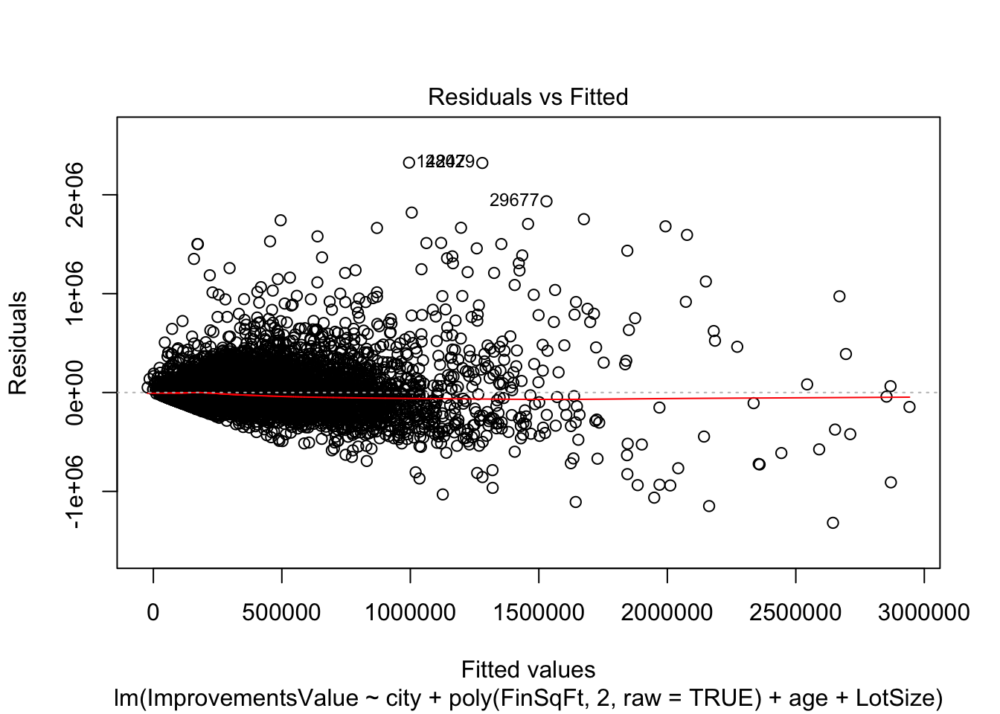
Residuals vs Fitted values: checks linearity and constant variance, should have a horizontal line with uniform scatter of points.
plot(lm_impvalue, which = 3)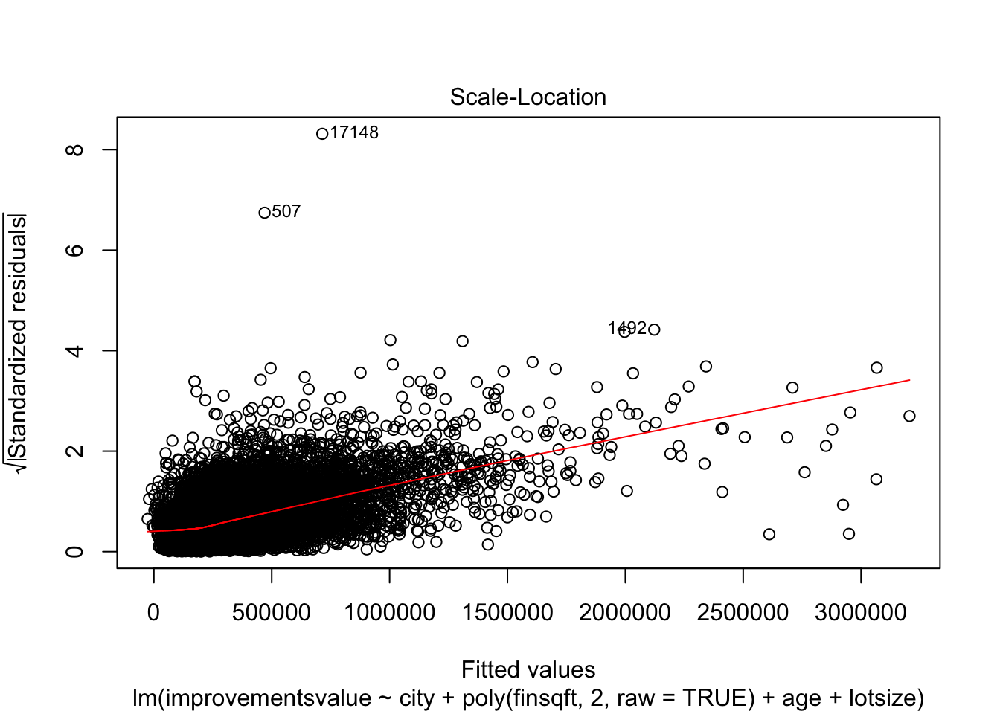
Scale-Location: checks constant variance, should have a horizontal line with a uniform scatter of points.
plot(lm_impvalue, which = 2)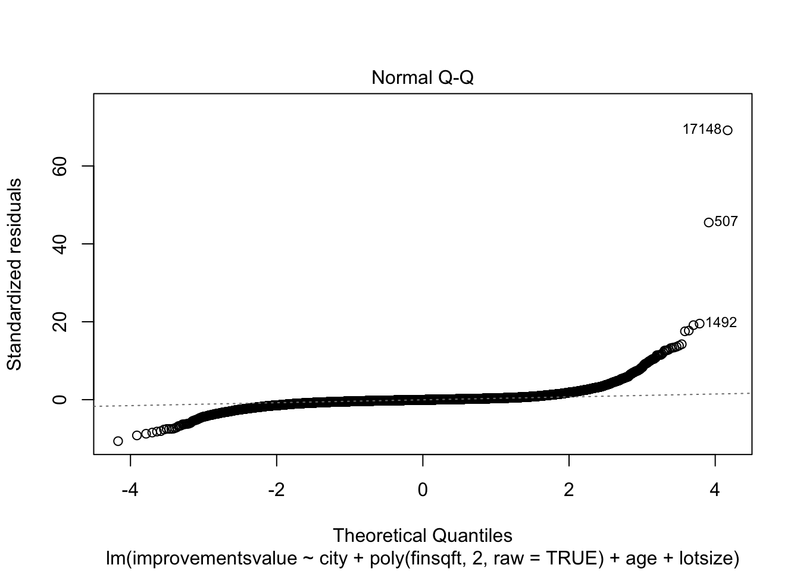
Normal Q-Q: checks normality, points should lie close to diagonal line.
plot(lm_impvalue, which = 5)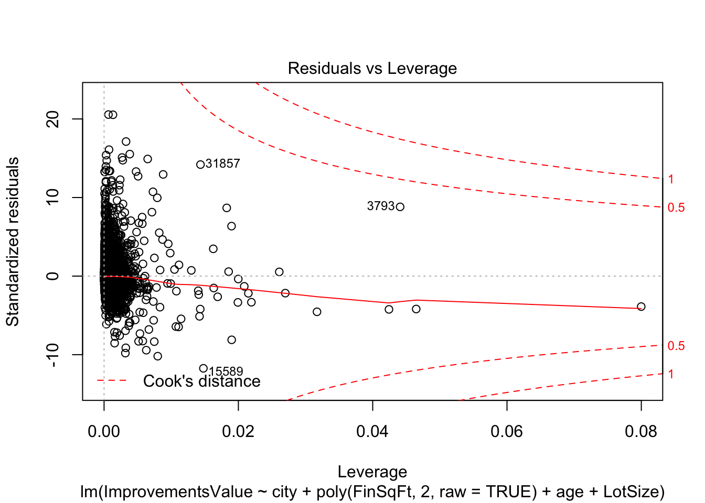
Residuals vs Leverage: checks for influential observations, points should lie within contour lines.
Evaluating model specification, model fit
What should be included in a model, and in what form, are questions of model specification (aka feature selection). Ideally, it’s based on theory; in practice, we often employ hypothesis tests comparing nested models or criteron-based approaches based on goodness-of-fit metrics.
To test whether inclusion of a subset of variables substantially improves a model, we can use a partial F-test to compare models with and without this subset of variables.
lm_imp_full <- lm(improvementsvalue ~ city*finsqft + age + lotsize,
data = homes)
lm_imp_red <- lm(improvementsvalue ~ city + finsqft + age + lotsize,
data = homes)
anova(lm_imp_red, lm_imp_full)## Analysis of Variance Table
##
## Model 1: improvementsvalue ~ city + finsqft + age + lotsize
## Model 2: improvementsvalue ~ city * finsqft + age + lotsize
## Res.Df RSS Df Sum of Sq F Pr(>F)
## 1 32732 6.6142e+14
## 2 32723 6.5700e+14 9 4.4236e+12 24.481 < 2.2e-16 ***
## ---
## Signif. codes: 0 '***' 0.001 '**' 0.01 '*' 0.05 '.' 0.1 ' ' 1The null hypothesis is that the models are essentially the same, that the reduced model fits as well as the more fully specified model. A low p-value is a rejection of that null: the fuller model has more explanatory power.
Alternatively, we can compare models on a goodness-of-fit measure like the Akaike Information Criteria (AIC). When comparing models fitted to the same data, the smaller the AIC, the better the fit.
extractAIC(lm_imp_full)## [1] 22.0 776827.3extractAIC(lm_imp_red)## [1] 13.0 777029.1Some recommend using cross-validation for model evaluation –- estimate, diagnose, build the model with half of your sample, and proceed with inference by estimating the “good” model on the second half of your data. We’ll get to an example of that at the end.
Interpretation and visualization
Interpretation: In multiple regression the coefficient represents the amount of change in \(Y\) for a unit change in each predictor, holding all other included variables contant. That is, interpretation proceeds as if one predictor could change with no other variables changing.
Visualization: models are often best conveyed visually. The broom package tidies model summaries into a tibble that we can plot.
tidy_imp <- tidy(lm_imp_full, conf.int = TRUE)
# coeffcient plot for intercept/factors
ggplot(tidy_imp[1:10,], aes(x = estimate, y = term,
xmin = conf.low,
xmax = conf.high)) +
geom_point() +
geom_vline(xintercept = 0) +
geom_errorbarh() +
labs(x = "Coefficient Estimate", y = "Intercept and Factors",
title = "Effect of City on Intercept")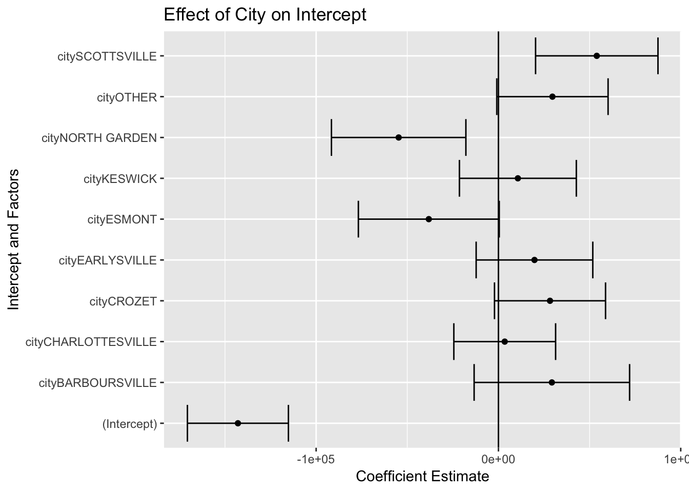
# coeffcient plot for slopes/interactions
ggplot(tidy_imp[11:22,], aes(x = estimate, y = term,
xmin = conf.low,
xmax = conf.high)) +
geom_point() +
geom_vline(xintercept = 0) +
geom_errorbarh() +
labs(x = "Coefficient Estimate", y = "Slopes and Interactions",
title = "Effect of Lot Size, Age, and Square Feet")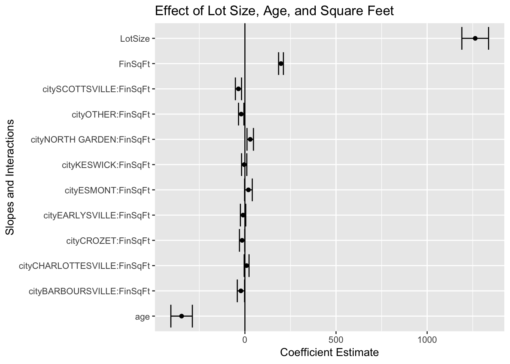
Regression as Machine Learning
We’ve been using regression as a statistical model; it is also one of the more widely used machine learning algorithms.
Machine learning
As mathematical representations, statistical models and machine learning algorithms are often indistinguishable. In practice, they tend to be used differently. Machine learning focuses on data-driven prediction, whereas statistical modeling focuses on theory-driven knowledge discovery.
Machine learning algorithms learn a target function (\(f\)) that best maps input variables (\(X\)) to an output variable (\(Y\)) – \(Y = f(X)\) – in order to make predictions of \(Y\) for new \(X\), aka predictive modeling/analytics. The goal is to maximize prediction accuracy/minimize model error, without reference to explainability (or theory, hypotheses).
| Statistical models | Machine learning models |
|---|---|
| Theory driven | Data driven |
| Explanation | Prediction |
| Researcher-curated data | Machine-generated data |
| Evaluation via goodness of fit | Evaluation via prediction accuracy |
Some definitions
For the example in the R script…
- RMSE: Root Mean Squared Error, measures the average prediction error made by the model; i.e., the average difference between the observed outcome values and the values predicted by the model.
- Cross validation: split data into a training set and test set; build/learn the model on the training set; calculate RMSE/prediction error of the model using the test/held-out data.
- \(k\)-fold cross validation: divide data into \(k\) sets, hold out 1 set and fit model with remaining \(k-1\) sets; calculate RMSE/prediction error on the held-out data; repeat with each \(k\) set; take average RMSE across \(k\).
Friends of the Linear Model
Many models expand on the basic linear regression model
- Genearlized linear models (e.g., logit, poisson, multinomial, etc.)
- Mixed effects models (random coefficients, hierarchical models)
- Penalized regression (shrinkage or regulariziation, e.g., Ridge, Lasso, ElasticNet)
- and more!
Resources
- Garrett Grolemund and Hadley Wickham. 2018. R for Data Science, Chapters 22-25
- James, G., et al. 2013. An Introduction to Statistical Learning. New York: Springer.